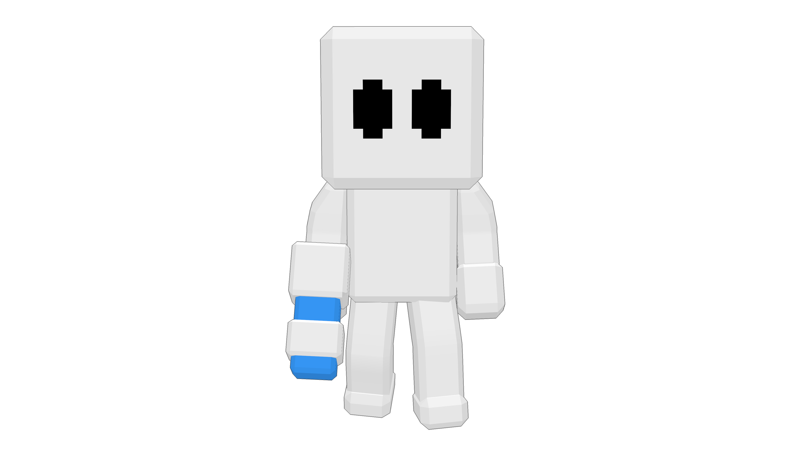

BUY ON STEAM
BUY ON STEAMLOW GRAVITY
Jump higher. Fall slower.
CHAOS MODIFIERS
The hunt is on. Then the rules change.
Pick your events and turn up the frequency.


LOW GRAVITYPROP RAINJump higher. Fall slower.
The floor turns to ice. Try to stay in control.
Everyone speeds up or slows down.
Hidden props spin to face a new direction.
Every prop gets an extra decoy.
Hunters get their paint tank and blast refilled.
Air blasts reach further and hit harder.
Goo eats props twice as fast.
Extra props fall from above.
Some map props turn into different props.
The map goes dark.
Thick fog cuts down visibility.
A new sky for the rest of the round.